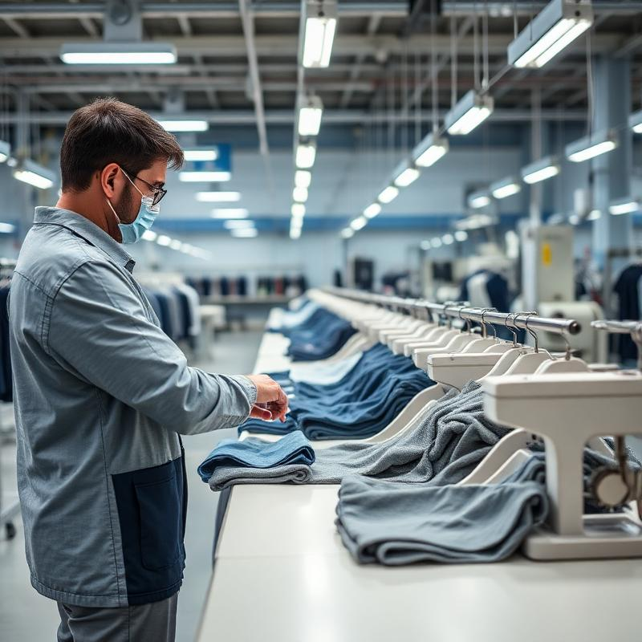

Our Story
Stitch by Stitch was founded in Karachi, Pakistan with a clear mission: to provide
international fashion brands with reliable, high-quality garment manufacturing
services at competitive rates.
Over the past 15+ years, we have grown from a small CMT unit to a
comprehensive manufacturing facility with state-of-the-art machinery, a skilled
workforce of over 500 professionals, and the capacity to handle large-scale
production orders.
Today, we serve clients across Europe, the Middle East, North America, and Asia,
maintaining the same commitment to quality and transparency that has been our
foundation from day one.
